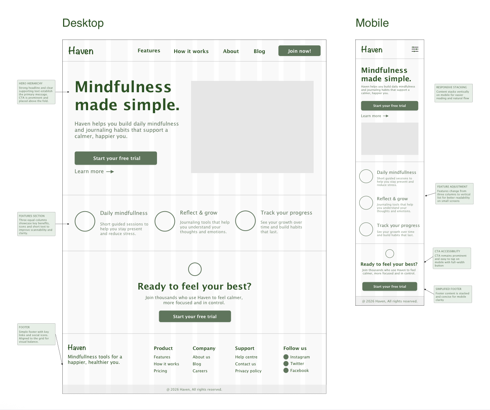
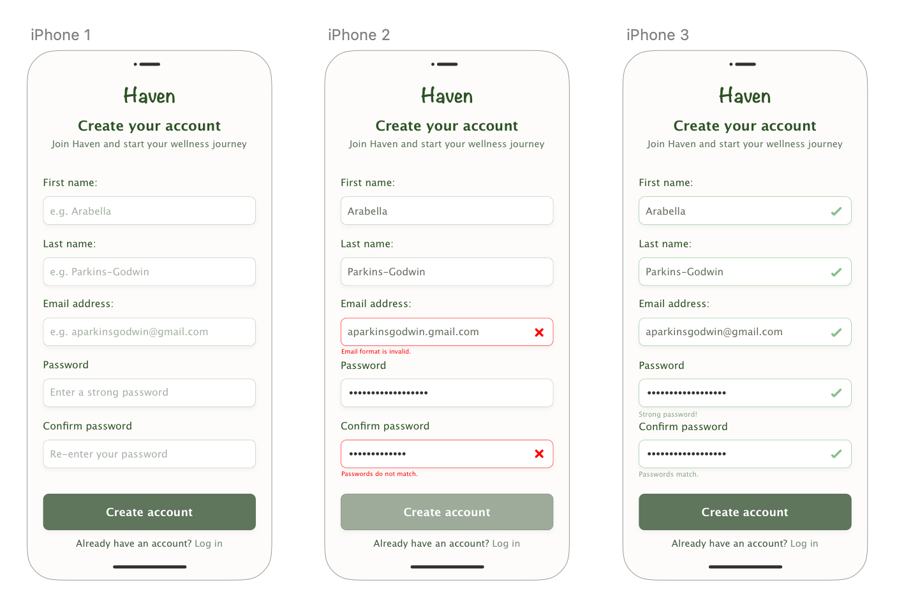

This site presents a single case study produced as part of a UX design course. Content is for academic submission and demonstration purposes.
Case Study
01 — Problem
Users need a clear and accessible registration form that reduces errors and builds trust.
02 — Process
Designed input fields, validation states, and error messaging focusing on usability and accessibility.

03 — Solution
Created a clean, mobile-first form with clear labels, inline validation, and visual feedback.
